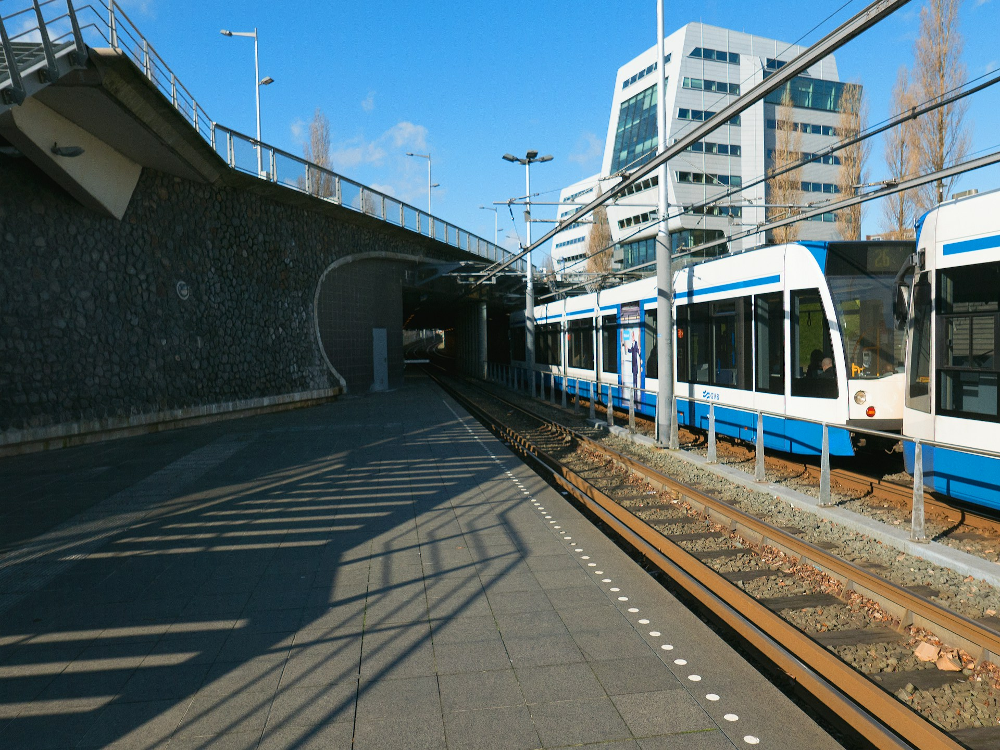

인프라사업
인프라사업은 공공의 이익을 위하여 불특정 다수 수요자를 대상으로 자연의 터전에 새로운 공간을 창조하는 산업입니다.
대표 프로젝트
앞선 기술력으로 사람과 환경을
고려하여 삶의 질 향상에 기여하고 있습니다.
민간자본을 활용하여 대규모 인프라를 건설하고 운영 하는 높은 경쟁력을 확보하고 있습니다.
- 
요점
Infra Essentials-
 31,234 2024년 매출액/억원
31,234 2024년 매출액/억원 -
117,984 2024년 수주잔고/억원
-
121 총 누적실적/건